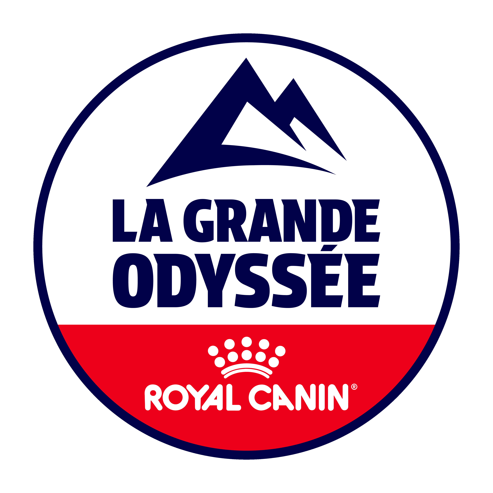

La Grande odyssée 2026
Rendez-vous le 19 Janvier 2026 !
La 22e édition de La Grande Odyssée Royal Canin, l’évènement annuel du chien de traîneau en Europe, se tiendra du 10 au 22 janvier prochain en Région Auvergne-Rhône-Alpes. Elle ouvre une nouvelle trajectoire pour la course.
L’Aventure Grandeur Nature réunie chaque année les passionnés de chiens de traîneaux. En janvier prochain, 65 mushers internationaux et leurs 600 chiens athlètes de haut niveau prendront le départ pour 13 jours de course, 11 étapes, 400 km et 10 000 mètres de dénivelé positif. Depuis 2005, la course a traversé plus de cinquante villages, villes et stations des départements de la Haute Savoie, Savoie et de l’Isère au cœur des beaux paysages de la Région Auvergne-Rhône-Alpes. Quelques chiffres : 13 jours de compétition pour plus de 400km parcourus 600 chiens athlètes pour 65 mushers 80 membres du staff le tout, en parcourant 3 départements!
Etape 8 : Summit 404 – Doucy-Valmorel
Pour cette édition 2026, une étape inédite voit le jour, reliant Summit 404 et Doucy Valmorel. Le Col de la Madeleine sera bien entendu de la partie, avec sa traversée lors de cette étape.